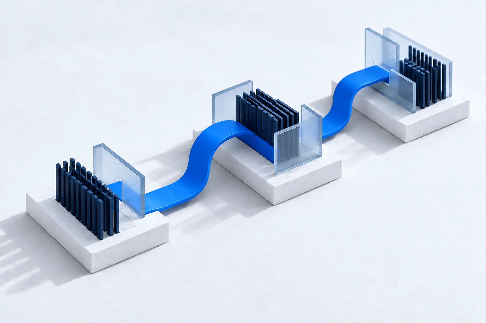

Tecnologia, dados, inteligência e resultados. Estratégia, expressão visual, imagem e movimento.
EGD Consultoria em Tecnologia01 / 08
01 · Essência e voz
O que nos move
Tecnologia que conecta projeto e operação.
A EGD organiza a complexidade de processos, dados e sistemas para quem precisa entregar. O universo da marca combina consultoria, sistemas, dados, automação e inteligência artificial. A geometria expressa estrutura e conexão.
Entre o desafio e a próxima entrega.
Mensagem de abertura
Clareza
Explicar o que fazemos e qual problema resolvemos. Ferramentas entram depois do contexto.
Proximidade
Construir com as pessoas que vivem a operação. Comunicação direta, colaborativa e em português claro.
Rigor
Dados com origem, compromissos específicos e acompanhamento da entrega.
Voz na prática
“Vamos construir juntos.” “Conte o seu projeto.” “Do projeto à operação.”
Nome e assinatura
EGD Consultoria em Tecnologia. Forma curta: EGD. Assinatura: Tecnologia que transforma. Soluções que geram valor. Domínio: egdsystem.com.br.
Não publicar métricas sem fonte, superlativos sem prova ou status de disponibilidade sem monitoramento real.
Estratégia e linguagem02 / 08
02 · Marca gráfica
Um símbolo, todas as aplicações
Um monograma próprio. Uma identidade conectada.
O monograma EG preserva a construção angular das referências fornecidas. O E azul e o G profundo se encontram em um contorno hexagonal aberto: integração, estrutura e continuidade.
Versão clara sobre tinta.
Respiro
Reservar uma largura de traço ao redor: 13 unidades na grade de 100 × 112 do símbolo.
Tamanho mínimo
Símbolo: 24 px de altura / 8 mm. Reduzida: 120 px de largura / 32 mm. Institucional: 280 px de largura.
Preservar
Proporção, alinhamento, desenho e cores. Na interface, usar sempre os componentes compartilhados.
Evitar
Distorção, giro, sombras, contornos, brilho e aplicação sobre imagens sem contraste.
Símbolo e EGD em curvas; descritor institucional em texto vetorial com fonte incluída. Use a versão reduzida ou o símbolo em espaços pequenos.
Símbolo e assinatura03 / 08
03 · Cor
Branco, azul profundo e conexão
Uma base calma. Uma direção clara.
Tinta #071D3B · texto e botões
Papel #F3F6FB · fundo
Sinal #0875E1 · marcações
Estrutura #E0EAF6 · apoio
Sinal escuro #075EB5 · texto de destaque
Azul claro #54B8FF · símbolo em fundo escuro
Proporção e contraste
Predomínio dos tons claros. Tinta organiza a leitura; azul marca pontos de atenção. Referência de composição: 65% claros, 25% tinta/estrutura e até 10% sinal.
Texto comum: mínimo 4,5:1. Texto grande e controles: mínimo 3:1. Em texto pequeno, usar o azul escuro. Botões primários: tinta com texto branco.
Secundário #4B6079 · Linha #CCD9E8 · Folha #FFFFFF. Projeto #075EB5 · foco e links. Azul claro exclusivo para fundos escuros. Sucesso, erro e aviso mantêm cores funcionais próprias.
Paleta e acessibilidade04 / 08
04 · Tipografia e composição
Clareza em cada escala
Archivo. Feita para ler e agir.
Aa Bb Cc Dd Ee Ff Gg 0123456789
Archivo em títulos, texto e interface. Pesos 400, 500 e 600. Fragment Mono reservada a dados, identificadores e códigos. O logotipo não depende de fontes instaladas.
Título principal / 44–77 pxUma ideia forte. Poucas palavras.
Título de seção / 30–46 pxOrganização e hierarquia.
Corpo / 16–18 pxEntrelinha confortável, 1,55 a 1,65.
Portal / corpo 15 pxDensidade para trabalhar, sem perder legibilidade.
Espaço
Base de 4 px. Container 1280 px. Margens de 48 px no desktop e 20–24 px no celular.
Forma
Linhas finas, cantos discretos de 4–8 px e composições alinhadas à esquerda. Sem sombras decorativas.
O site apresenta a marca. O portal facilita o trabalho. A identidade é a mesma; a densidade acompanha a tarefa.
Tipografia e interface05 / 08
05 · Universo de imagens
O intangível ganha forma
Engenharia tangível. Conexões visíveis.
Território. Infraestrutura, habitação e energia ligadas por um percurso. Aplicação: abertura do site, autenticação e peças institucionais.

Fluxo. Plataformas e dados conectados. Aplicação: serviços, método e apresentação da empresa.
Representações conceituais geradas com IA. Não são fotografias de clientes, obras ou equipe. Materiais foscos, luz natural, branco frio, tinta e azul. Evitar neon e gráficos com indicadores comerciais fictícios.
Direção de arte e uso responsável06 / 08
06 · Movimento e vídeo
Movimento com intenção
Uma conexão. Três momentos.
01 Entender
O contexto, a rotina e os critérios de sucesso.
02 Conectar
Dados, processos e sistemas numa arquitetura.
03 Entregar
Validar com pessoas e colocar em operação.
Interação em JavaScript
Seleção por clique ou teclado. Desenho do percurso em 750 ms. Sem repetição contínua. A preferência de movimento reduzido desliga a animação.
Filmes da marca
Apresentação · 15 s · 1280 × 720Desafio → contexto e conexão → entrega → convite.
Assinatura · 8 s · 1280 × 720Fechamento institucional: “Do projeto à operação”.
Motion graphics produzidos com Canvas/JavaScript e imagens da marca. Arquivos WebM, sem áudio. Apresentação na página inicial; assinatura na página Sobre. Players com controles, poster, legenda e transcrição. Sem reprodução automática.
O movimento deve explicar uma relação ou responder a uma ação. Nunca competir com a leitura.